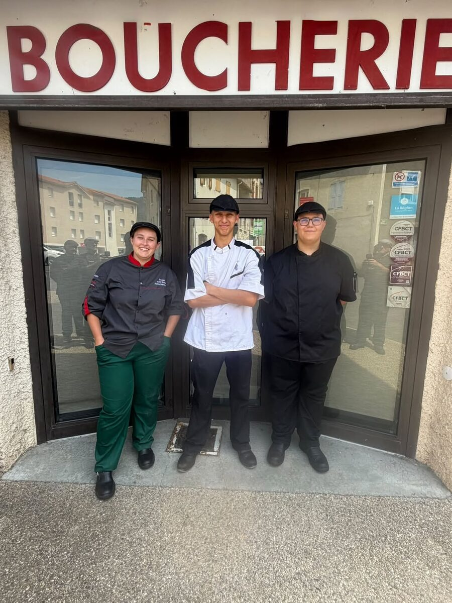

Une boucherie de bourg, une équipe
Au 9 rue du Marché, on coupe, on désosse, on ficelle et on conseille, tous les jours sauf le lundi.

Le comptoir
Le magasin est clair et ouvert, tout en chêne et en noir. Derrière la vitrine, les viandes sont étiquetées une à une, avec le nom de la pièce et son prix au kilo. Au mur, les saucissons secs finissent de sécher dans leurs niches éclairées.
On y vient pour le rôti du dimanche, pour la côte de bœuf du week-end, pour un plat à emporter à midi ou pour préparer une grande table.

Eric Loubet et ceux qui travaillent avec lui
La boucherie a démarré son activité en 2007. Eric Loubet la dirige et préside aujourd'hui le syndicat des bouchers, charcutiers et traiteurs de Haute-Loire, et il défend le métier au-delà de son comptoir.
Autour de lui, une équipe où les apprentis ont toute leur place, en vestes noires ou blanches, à la découpe comme au comptoir.
Les autocollants de la Confédération française de la boucherie, boucherie-charcuterie, traiteurs (CFBCT) sont collés sur la porte de la boutique.
Former la relève
Former des apprentis fait partie du travail de la maison. L'un d'eux, Lucas Peyret, a reçu le Prix Médicis du meilleur projet professionnel lors de la finale nationale du concours « Un des Meilleurs Apprentis Bouchers de France », organisée à Ajaccio.
En 2024, l'équipe et ses apprentis étaient à Arras pour un autre rendez-vous de la profession, avec une pièce de présentation montée pour l'occasion.

Ce que vous trouvez ici
Les engagements de la maison, tels qu'on les voit dans la vitrine.
- Du bœuf de races à viande, d'Aubrac et du Limousin, et du veau élevé sous la mère.
- Des volailles fermières sous Label Rouge pour les fêtes : chapon, dinde, poularde.
- Le Fin Gras du Mézenc en saison, produit sous appellation d'origine protégée.
- Une charcuterie artisanale et un traiteur préparés à la boutique.
- Un conseil pour chaque morceau : cuisson, quantité, découpe.
Quelques repères
- 2007Début de l'activité de la boucherie, rue du Marché à Retournac.
- AjaccioFinale nationale « Un des Meilleurs Apprentis Bouchers de France » : Prix Médicis du meilleur projet professionnel pour un apprenti de la maison.
- Haute-LoireEric Loubet est président du syndicat des bouchers, charcutiers et traiteurs du département.
- Mars 2025La boutique s'habille aux couleurs de l'Équipe de France de boucherie pour la Coupe du monde de boucherie, à Paris, les 30 et 31 mars.
- Aujourd'huiRéférencée sur « Mon boucher et moi », l'annuaire des artisans bouchers d'Auvergne-Rhône-Alpes.